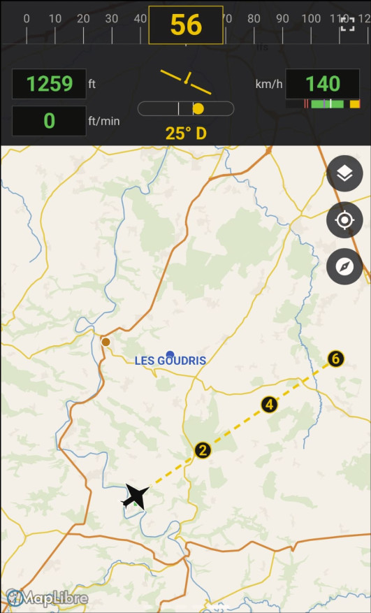

🗺
Moving Map
Carte VFR hors-ligne (MapLibre) centrée sur l'avion
NUMMAP · numérique (100%-5L mini)

Possibilités
- Fond de carte MapLibre affiché directement dans la cellule (plus besoin de cliquer pour l'ouvrir).
- En-tête EFIS en haut (cap, altitude, vario, vitesse, bille) ; la carte occupe le reste.
- La carte suit l'avion ; icône avion noire au centre.
- Trace parcourue (ligne verte) et prolongation de route (pointillés jaunes) avec pastilles temps 2 / 4 / 6 min le long de la route (selon la vitesse sol).
- Villes et codes ICAO des terrains affichés sur le fond (activables/masquables).
- Espaces aériens, aérodromes, balises, obstacles, points de report (données OpenAIP) superposés.
Boutons (à droite)
- Couches : ouvre la sélection des éléments à afficher (villes, codes terrains, aérodromes, espaces aériens, balises, obstacles, points de report). Choix mémorisé.
- Recentrer (cible) : recentre sur l'avion et réactive le suivi automatique.
- Nord / Cap en haut : bascule l'orientation du fond de carte.
- + / − : zoom.
Gestes
- Pincer : zoomer / dézoomer.
- Déplacer à deux doigts : déplacer la carte (passe en vue libre ; le bouton Recentrer rétablit le suivi). Un glissement à un doigt fait défiler les cockpits.
- Tap sur un aérodrome ou un espace aérien : ouvre une fiche d'information (voir ci-dessous).
Fiche d'information (tap)
- Aérodrome : nom, code ICAO, type, altitude terrain et fréquences.
- Espace aérien : nom, type (CTR, TMA, SIV, zone D/R/P…), plancher / plafond et fréquence.